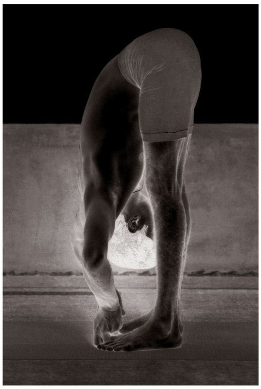
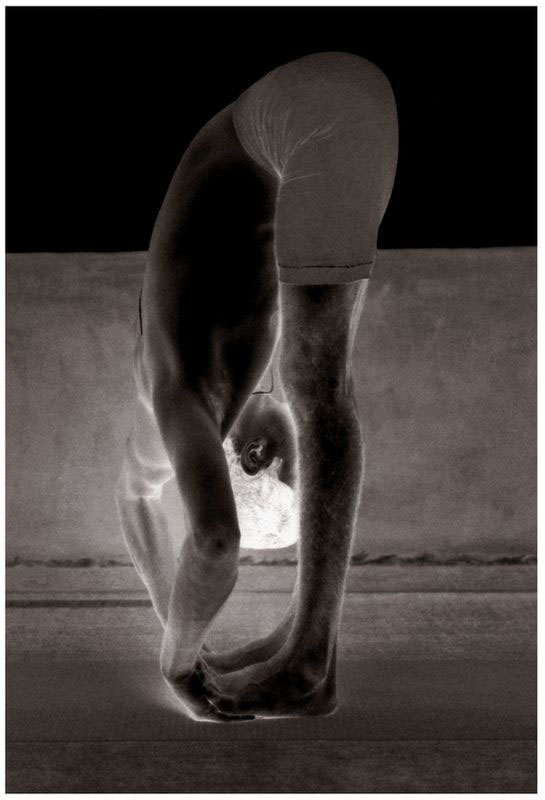

Padahastasana has three vinyasas. The 2nd vinyasa is the state of the asana.
PADANGUSHTASANA

PADAHASTASANA

METHOD
To begin, stand with the legs as much as half a foot apart, as in Padangushthasana, and doing puraka and then rechaka, place palms under the feet and, doing puraka, lift the head up and stay in position; this is the 1st vinyasa. Then, doing rechaka, place the head in the region between the knees, keeping knees straight, and hold position, doing rechaka and puraka fully as much as possible; this is the 2nd vinyasa. Then, taking the breath in, lift only the head; this is the 3rd vinyasa. Then Samasthiti, as in the earlier asana. In the state of this asana, the lower abdomen should be drawn in tightly, and rechaka and puraka done as much as possible.
BENEFITS
Padahastasana purifies the anal canal, kidneys, and lower abdomen.